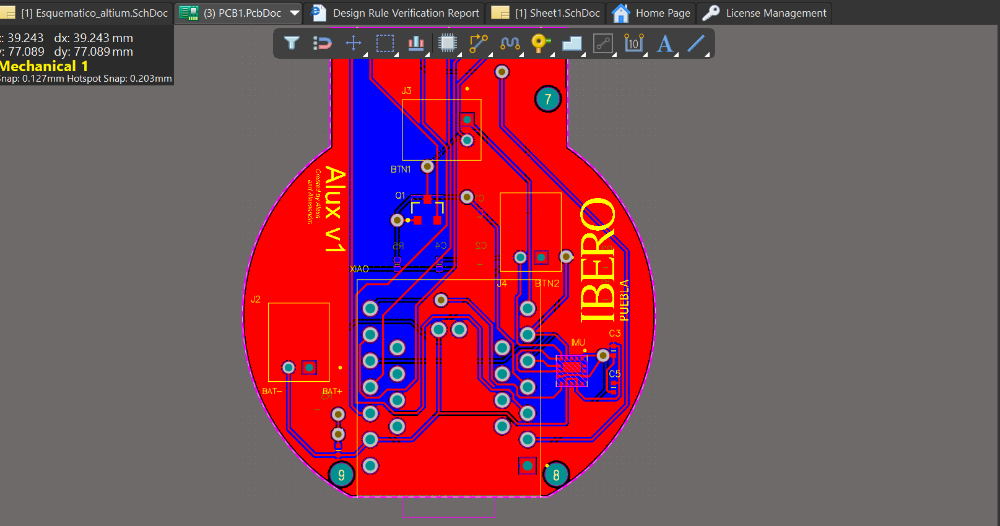
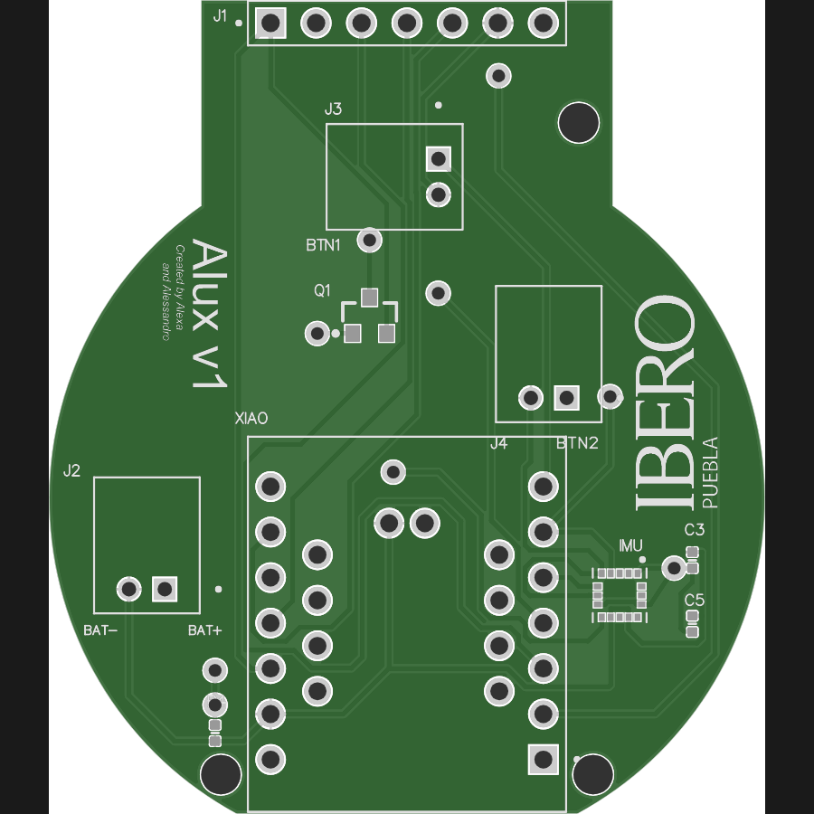

Kiro
Tamagotchi minimalista con PCB circular propia: dos ojos planos de color que sienten, se mueven y reaccionan.
Producción Electrónica · IBERO Puebla
Autores: Alexa y Alessandro

Interactivo

Estudio de animacionesLas 23 expresiones, el nacimiento y un tour completo. Cambia colores, ojos y pupilas; clic = criatura nueva.

Intros del logo KIRO12 propuestas animadas de la pantalla de encendido. La elegida es la 12, «Hilos que mutan». Clic para verlas grandes y votar.
Intro + nacimiento completoRender exacto del firmware (30 fps, ~46 s): del logo al nacimiento de la criatura.

Calificador de criaturas50 criaturas base para votar «me encanta / más o menos / no» y afinar el generador.
El proyecto en datos
MCUXIAO RP2350 · 250 MHz
PantallaGC9A01 redonda 240×240
SensorLIS3DHTR (acelerómetro)
PCB2 capas · Altium · JLCPCB
Firmware50–60 fps con DMA SPI
Criaturasúnicas, semilla en flash
Hardware

EsquemáticoRedes, mapa de pines verificado y por qué existe cada componente.

PCB «Alux V1»La placa enviada a fabricar: especificaciones, taladros, DRC y renders de los Gerbers.

Gerbers renderizadosTop y bottom del paquete de fabricación del 31-oct.